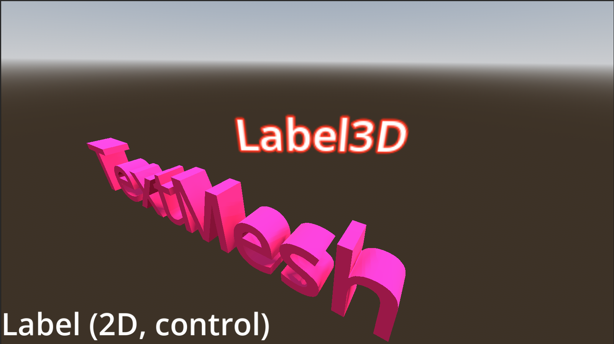
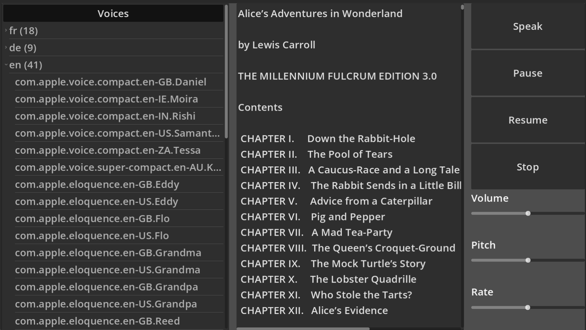
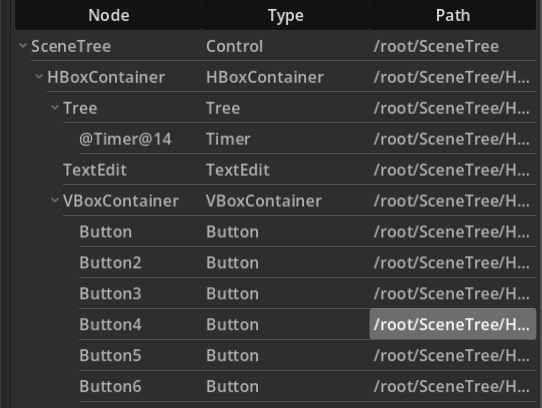
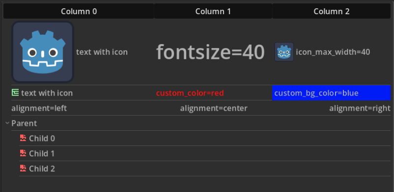
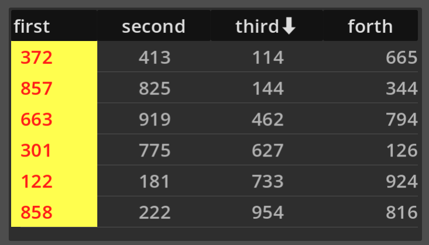
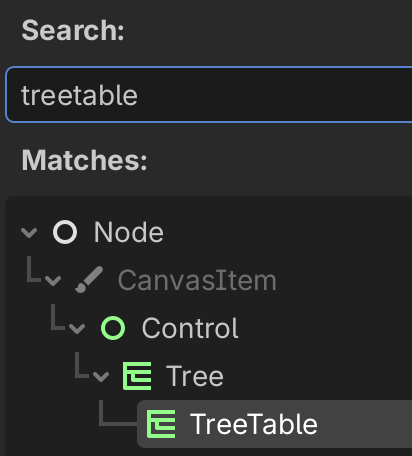

Work with text¶
There are 3 ways to display text inside a scene:
TextMesh3D
Label3D
Label (2D control node)
Introduction¶
Let’s show these three node types by creating a small scene called Label.
{kind=link}
add a
MeshInstance3D, select aTextMeshand set the text toTextMesh.add a
Label3D, selectFlags > Y-Billboardand set the text toLabel3D.add a
Labeland set the text toLabel (2D, control).
In order to make the scene visible, we must add a WorldEnvironment, a DirectionalLight3D and a Camera3D.

The TextMesh is a 3D text object. Set the albedo color to violet.
The Label3D is a flat object. Seen from the back, it is transparent and the text is a mirror image. The billboard option allows the Label3D to always turn towards the camera. Set the outline to red, the font size to 32 and the outline size to 6.
The Label is a 2D object which is always in the same position within the camera viewport. We set the theme override font size to 80.
Text-to-speech¶
The text-to-speech (TTS) functionality allows to have text pronounced automatically.
In order to use text-to-speech, you have to enable it in the project settings:
Go to Project > Project Settings.
Display Advanced Settings.
Check Audio > General > Text to Speech.
Restart Godot.
Depending on your OS, the voices will vary.
Text-to-speech is a function of DisplayServer.
There are 9 functions starting with tts_
tts_get_voices()returns aPackedStringArrayof voicestts_get_voices_for_language(lang)returns the voices for a given language (en, fr, de)tts_is_paused()returns true if pausedtts_is_speaking()returns true if speakingtts_pause()pause speech productiontts_resume()resume speech when pausedtts_set_utterance_callback(event: TTSUtteranceEvent, callable: Callable)tts_speak(text, voice, volume, pitch, rate)start the speech synthesizertts_stop()stop speech production
Create a new scene, place a Control node as root and name it Speech.
add a
HBoxContainerand fill all available space (anchor preset = Full Rect).add 3 items and select
Control > Layout > Container Sizing > Expand.refer to the image below.
{kind=link}
Create global variables to access to 5 nodes we are going to use frequently.
While you drag the node from the scene tree editor into the script, press the cmd key.
This will automatically add the @onready annotation.
extends Control
# Pick a voice. Here, we arbitrarily pick the first English voice.
var voice_id = DisplayServer.tts_get_voices_for_language("en")[0]
@onready var tree: Tree = $HBoxContainer/Tree
@onready var text: TextEdit = $HBoxContainer/Text
@onready var volume: HSlider = $HBoxContainer/VBoxContainer/Volume
@onready var pitch: HSlider = $HBoxContainer/VBoxContainer/Pitch
@onready var rate: HSlider = $HBoxContainer/VBoxContainer/Rate
We configure the Tree control and fill it with the available voices.
create a root node and hide it
add a column title
enter a loop with the languages (French, German and English)
get the list of voices for each language
add each voice as a child to the given language.
In the later part, we load the TextEdit node with the text from Alice in Wonderland.
func _ready() -> void:
var root = tree.create_item()
tree.hide_root = true
tree.column_titles_visible = true
tree.set_column_title(0, 'Voices')
for lang in ['fr', 'de', 'en']:
var parent = tree.create_item(root)
var voices = DisplayServer.tts_get_voices_for_language(lang)
parent.set_text(0, "%s (%s)" % [lang, voices.size()])
for voice in voices:
var child = tree.create_item(parent)
child.set_text(0, voice)
var path = "res://books/alice.txt"
var file = FileAccess.open(path, FileAccess.READ)
var content = file.get_as_text()
text.text = content
In order to increase the text size of all controls, you can add a Theme to the root Speech node.
There you can set the default font size to 28.
{kind=link}
All of the text will now hava a larger font-size.

Connect each _on_button_pressed signal to the following functions:
func _on_speak_pressed() -> void:
var selection = text.get_selected_text()
DisplayServer.tts_speak(selection, voice_id, volume.value,
pitch.value, rate.value)
func _on_pause_pressed() -> void:
DisplayServer.tts_pause()
func _on_resume_pressed() -> void:
DisplayServer.tts_resume()
func _on_stop_pressed() -> void:
DisplayServer.tts_stop()
When selecting a new voice in the Tree we update the global voice_id variable.
func _on_tree_cell_selected() -> void:
voice_id = tree.get_selected().get_text(0)
_on_stop_pressed()
_on_speak_pressed()
For each of the 3 sliders, when the value changes, we stop the current speech and restart with the new parameters.
func _on_value_changed(x):
_on_stop_pressed()
_on_speak_pressed()
To test it do this:
Choose a voice
Select text with the mouse
Click on
SpeakPause with
PauseResume with
ResumeModify the 3 sliders (volume, pitch, rate).
Display a scene tree¶
The Tree control can be used to display a hierarchy. A good example of a hierarchy is the scene tree, which is displayed in the scene editor.
Create a new scene, place a Control node as root and name it SceneTree.
save it and add a script
add a
HBoxContainerand fill it to the maximum (anchor preset = Full Rect)add 3 items and select Control > Layout > Container Sizing > Expand
refer to the image below
{kind=link}
In the script we start with 2 variables to refer to
Treewhich displays the scene treeTextEditwhich displays the callback functions when clicking inside the tree
extends Control
@onready var tree: Tree = $HBoxContainer/Tree
@onready var text: TextEdit = $HBoxContainer/TextEdit
var voice_id = DisplayServer.tts_get_voices_for_language("en")[0]
The main work to fill the tree is done with the recursive add_children() function.
it loops through all the children for a given
nodecreates a new child tree item
sets name, class and path
does recursively add the children to each child node
func add_children(node, item):
for child_node in node.get_children():
var tree = item.get_tree()
var node_class = child_node.get_class()
var child_item = tree.create_item(item)
child_item.set_text(0, child_node.name)
child_item.set_text(1, child_node.get_class())
child_item.set_text(2, child_node.get_path())
child_item.set_metadata(0, child_node.get_path)
add_children(child_node, child_item)
In the _ready() function, we configure the Tree node:
set to 3 columns
add the column titles
get the root node
create a root tree item
start by recursively adding the children
func _ready() -> void:
tree.columns = 3
tree.column_titles_visible = true
tree.set_column_title(0, "Node")
tree.set_column_title(1, "Type")
tree.set_column_title(2, "Path")
var scene_root = get_tree().root
var tree_root = tree.create_item()
tree.hide_root = true
add_children(scene_root, tree_root)
This is the result, a tree with 3 columns:
column 1 shows the collapsable scene tree
column 2 shows the node type
column 3 shows the complete node path

In order to show the interaction when selecting a tree cell, add the following two functions.
They add a line of text to the TextEdit and pronounce the cell content.
func _on_tree_cell_selected() -> void:
var item = tree.get_selected()
var row = item.get_index()
var col = tree.get_selected_column()
var content = item.get_text(col)
text.text += "cell %s, %s selected: %s\n" % [row, col, content]
DisplayServer.tts_stop()
DisplayServer.tts_speak(content, voice_id)
func _on_tree_column_title_clicked(column: int, mouse_button_index: int) -> void:
text.text += "column %s %s clicked\n" % [column, mouse_button_index ]
When clicking on a column header or on a cell, the following text is displayed in the text window:
{kind=link}
Configure tree items¶
The TreeItems can be configured with
icon
font size
alignment
text color and background color
Create a new scene, place a Control node as root and name it TreeItem.
save it and add a script
add a
HBoxContainerand fill it to the maximum (anchor preset = Full Rect)add 2 items and select Control > Layout > Container Sizing > Expand
refer to the image below
{kind=link}
Start by defining these variables
extends Control
@onready var tree: Tree = $HBoxContainer/Tree
@onready var text: TextEdit = $HBoxContainer/TextEdit
var voices = DisplayServer.tts_get_voices_for_language("en")
var voice_id = voices[0]
Use the _ready() function to create a tree root item and 3 columns
func _ready() -> void:
tree.hide_root = true
tree.columns = 3
tree.column_titles_visible = true
for i in 3:
tree.set_column_title(i, "Column " + str(i))
Add the Godot logo as an icon.
change the font size
change the icon size.
var root = tree.create_item()
var icon = load("res://icon.svg")
var item = tree.create_item(root)
item.set_text(0, "text with icon")
item.set_icon(0, icon)
item.set_text(1, "fontsize=40")
item.set_custom_font_size(1, 40)
item.set_icon(2, icon)
item.set_text(2, "icon_max_width=40")
item.set_icon_max_width(2, 40)
Change the text color and the background color.
icon = load("res://Tree.svg")
item = tree.create_item(root)
item.set_text(0, "text with icon")
item.set_icon(0, icon)
item.set_text(1, "custom_color=red")
item.set_custom_color(1, Color('red'))
item.set_text(2, "custom_bg_color=blue")
item.set_custom_bg_color(2, Color('blue'))
Change the alignment.
item = tree.create_item(root)
item.set_text(0, "alignment=left")
item.set_text(1, "alignment=center")
item.set_text_alignment(1, HorizontalAlignment.HORIZONTAL_ALIGNMENT_CENTER)
item.set_text(2, "alignment=right")
item.set_text_alignment(2, HorizontalAlignment.HORIZONTAL_ALIGNMENT_RIGHT)
Add a parent and 3 collapsible children.
var parent = tree.create_item(root)
parent.set_text(0, "Parent")
for i in 3:
item = tree.create_item(parent)
item.set_edit_multiline(0, true)
item.set_editable(0, true)
item.set_text(0, "Child " + str(i))

Sort a table¶
The Tree node can be used to display tables. We create a new class with the following properties:
columns= number of columnsrows= number or rowscolumn_titles= an array of titlesclicking on a column title : sorts the table by that column
In the image below we see a 6 x 4 table, filled with random integers. It has been sorted in ascending order by the 3rd column (as shown by the the arrow). The first column has a yellow background and a red font-color.

The inspector shows the 6 rows, the column titles, etc. When clicking on a cell, the content is pronounced.
{kind=link}
The script has the @tool annotation and makes it interactif in the editor.
We extend the Tree class and call it TreeTable.
The exported variables allow to configure the table in the editor.
@tool
extends Tree
class_name TreeTable
## A control which creates an editable table based on a Tree node.
##
## Clicking on the column titles sorts the table by column.
## All the parameters of the table can be set in the inspector.
## Number of rows to create.
@export var rows = 10
## List of column titles.
@export var column_titles : Array[String]= ['first', 'second', 'third']
## List of column title alignment (left, center, right).
@export var column_alignment: Array[HorizontalAlignment] = []
## List indicating editable columns (true).
@export var editable: Array[bool] = []
## List of column text alignment (left, center, right).
@export var cell_alignment: Array[HorizontalAlignment] = []
## List of column text colors.
@export var color: Array[Color] = []
## List of column background colors.
@export var background_color : Array[Color] = []
## Pronounce the cell content via text-to-speech.
@export var pronounce_cell = false
## Button action to create the table.
@export_tool_button("Make Table") var action = make_table
## Button action to fill the table with random integers.
@export_tool_button("Fill Random") var action1 = fill_random
The above code creates this new class.
All functions have a documentation comment ( ##).
{kind=link}
This new class is implemented by the following code.
## The voice ID used to pronounce the cell content.
var voice_id = DisplayServer.tts_get_voices_for_language("en")[0]
var root: TreeItem ## Root tree item.
var array : Array ## Array which is displayed.
var sort_order = [true, true, true, true] ## Sort order true=increasing.
func _ready():
if not column_title_clicked.is_connected(_on_column_title_clicked):
column_title_clicked.connect(_on_column_title_clicked)
if not cell_selected.is_connected(_on_cell_selected):
cell_selected.connect(_on_cell_selected)
make_table()
fill_random()
## Set the column titles and alignement.
func make_columns():
for i in min(columns, column_titles.size()):
set_column_title(i, column_titles[i])
for i in min(columns, column_alignment.size()):
set_column_title_alignment(i, column_alignment[i])
## Create an empty table, with cell color and alignment.
func make_table():
clear()
make_columns()
root = create_item()
hide_root = true
for i in rows:
var row_item = create_item(root)
for col in columns:
row_item.set_text(col, "cell %d, %d" % [i, col])
for col in min(columns, cell_alignment.size()):
row_item.set_text_alignment(col, cell_alignment[col])
for col in min(columns, color.size()):
row_item.set_custom_color(col, color[col])
for col in min(columns, background_color.size()):
row_item.set_custom_bg_color(col, background_color[col])
for col in min(columns, editable.size()):
row_item.set_editable(col, editable[col])
## Create an array with random integers (0 to 1000).
func make_random_array():
array = []
for i in rows:
var line = []
for j in columns:
line.append(randi_range(0, 1000))
array.append(line)
## Fill the tree with random integers.
func fill_random():
make_random_array()
load_array()
## Load the array into the tree table.
func load_array():
var i = 0
for item in root.get_children():
for j in columns:
item.set_text(j, str(array[i][j]))
i += 1
## Load a new array into the tree array.
func load(new_array):
rows = new_array.size()
columns = new_array[0].size()
array = new_array.duplicate(true)
make_table()
load_array()
## Sort an array based on a given column.
func sort_by_column(array, col, increasing=true):
if increasing:
array.sort_custom(func(a, b): return a[col] < b[col])
else:
array.sort_custom(func(a, b): return a[col] > b[col])
## Clicking on the column title sorts the table by that column.
func _on_column_title_clicked(column: int, mouse_button_index: int) -> void:
print(column, " - ", mouse_button_index)
sort_order[column] = not sort_order[column]
sort_by_column(array, column, sort_order[column])
load_array()
for i in min(columns, column_titles.size()):
var title = column_titles[i]
if i == column:
title += '⬇' if sort_order[column] else '⬆'
set_column_title(i, title)
## Clicking on the cell will pronounce the content.
func _on_cell_selected() -> void:
if pronounce_cell:
var item = get_selected()
var column = get_selected_column()
var content = item.get_text(column)
DisplayServer.tts_stop()
DisplayServer.tts_speak(content, voice_id)
Download¶
Download the Godot Project.